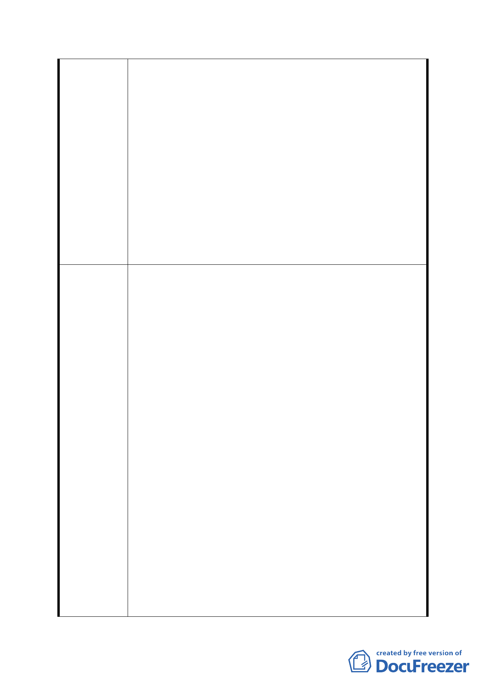

2. 該區目前為社區居民運動休憩之地點，並具有30餘棵
整排之老榕樹，實際發揮社區鄰里公園之功能。
3. 柏油路面破壞水土保持。
六、建議位置：興泰里辛亥隧道南口西北側上方「翠池」
1. 恢復辛亥隧道南口西北側上方「翠池」之淺積水，以
利水土保持，並成為具教育價值之溼地保護區公園。
2. 此翠池魚30年前曾為一小型湖泊，因辛亥隧道開通而
放光蓄水，此區長約100公尺，寬約10公尺，高約3
公尺。建議恢復1公尺的積水。
七、建議位置：辛亥捷運站周邊臨辛亥路區域
1. 捷運站周邊圍住二／住三，有礙捷運共構商圈之發
展。
2. 優力加油站造成交通堵塞，不適合於辛亥路／萬美街
口營業。
一、 建議位置：興泰里、興旺里、興豐里、及萬盛里北側
芝蘭山及蟾蜍山地段
1.「公墓用地」改為「公園用地」，遷墓後建設「茶路
古道」舊址，登山步道貫通蟾蜍、芳蘭、中埔、福州、
軍功山系，並同時供自行車行走。
2.立即遷墓（3年內完成），並廣植樹木防洪。
3.定位為文山區北側之「親山景觀及遊憩系統」。
二、 建議位置：辛亥路四段、萬美街、興德路66巷間之土
地
1.國／高中用地全面改為「藝文特區用地」或「運動公
園」或「公共設施用地」或「商業區」。
建議辦法
2.軍營即刻依95年2月都市計畫，由市府協助搬遷。
3.定位為「都市開放空間及遊憩系統」。
三、 建議位置：興德路66巷西南側之軍營
1. 軍營之機關用地改為「辛亥國／高中用地」完全中
學規劃。
2. 軍營搬遷後，辛亥國高中正式興建前，維持平坦綠
地形式，供市民活動之用。
3. 軍營立即搬遷。
四、 建議位置：興昌里、興泰里、興光里、萬美里、興旺
里、興豐里、萬盛里、興得里、興業里
1. 都市計畫主要計畫中對生活圈之定義，除現有7個
生活圈外，應增加第8個生活圈，以利整體區域規
劃。
- 30 -